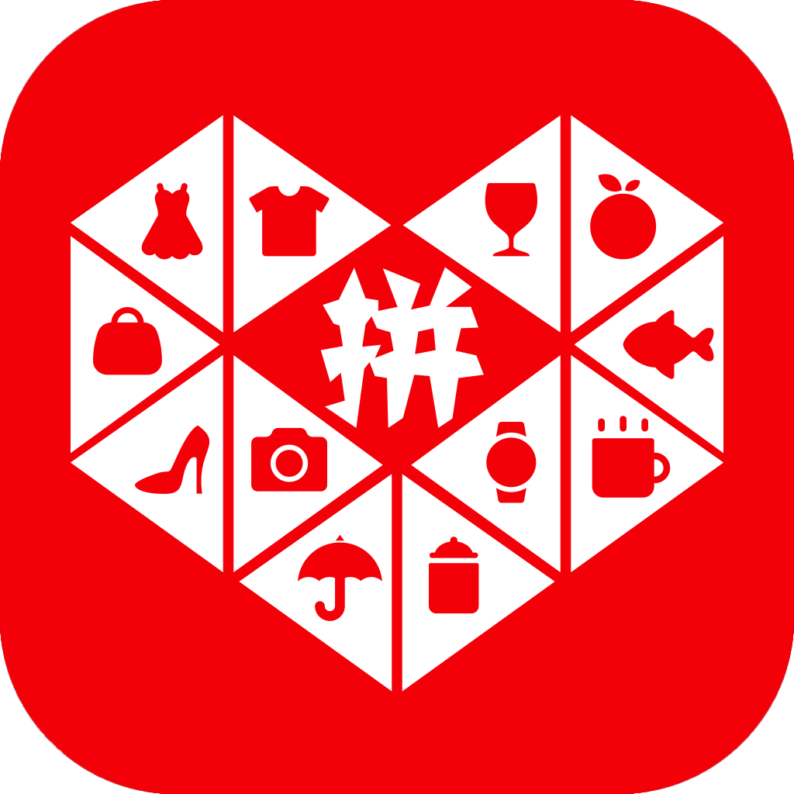
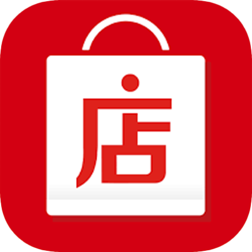
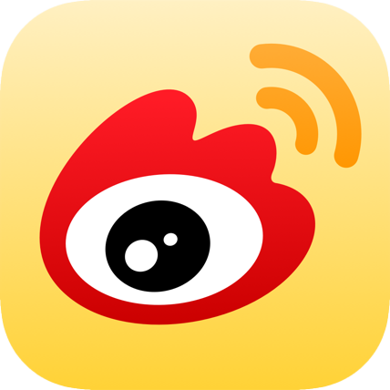
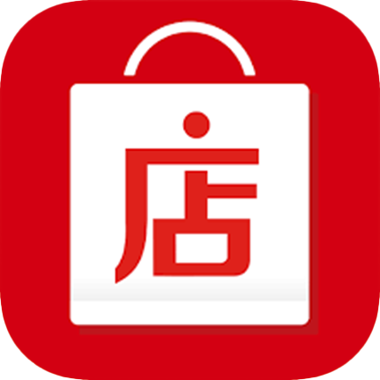
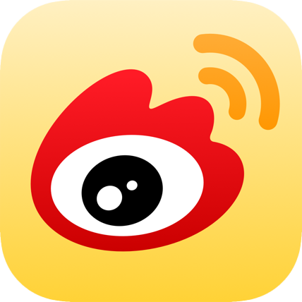

欢迎来到「难得葫芦酒馆」
一家佛系小酒馆
想发现生活里的几许小确幸
想告诉你几种世上好喝的酒
一壶浊酒喜相逢
干杯朋友
买酒看这里
(恭喜你找到彩蛋! 买酒时将暗号【葡萄侠】发给客服可以额外优惠1.00元~~)
拼多多(需手机):  淘宝:  微店(更多线下酒款):  微博: 
微店(更多线下酒款):  微博: 
为什么要叫难得葫芦?
其实这个名字，算是一拍脑袋想出来的。去注册的时候，政府部门的小姐姐反复再三确认，真的叫这个名字？….额，我觉得很有趣啊。
古时那些不在五行中的超脱之人，不是都爱用葫芦喝酒么。而“难得葫芦”，取自谐音“难得糊涂”，大致是想靠近一些我内心向往的“一壶浊酒喜相逢。古今多少事，都付笑谈中”的惬意生活。虽然知道自己的状态离这种境界差很远，那就从喝酒这件事开始体会吧，哈哈哈。
为什么要卖酒？
其实我家遗传的酒量应该是“海量”这种级别的，但是到了我这儿有点基因突变，喝两杯就脸红心跳。也不知道当年是哪个神仙给我开了光，在法国读书的第二年从经济学换到了葡萄酒专业，从此人间正道都跟我无关了。
读完书在法国酒庄实习了一段时间，回国后又在酒行业里干了五年。我可以自豪地说，学问不知道涨没涨，但是我的酒量那必须是涨了！
我是个拥有广阔胸怀的人，吼吼，所以对各种各样的酒都保有强烈的好奇心。尊重名庄酒，也喜欢小众酒，会喝大酒，也乐于发现好喝便宜的酒。很爱旧世界，也宠溺新世界。
所以你会在店里发现各种酒，都是我自己尝过非常喜欢的，葡萄酒、清酒、果酒、米酒、烈酒…等等…目前还是国内代理居多，等买的人多了，我就有钱去国外进口那些我念念不忘的酒！
所以，酒鬼们，我的理想需要你们的支持啊，么么么~
店主是个什么样的人？
店主是个普通人，白羊座，长相一般，智商一般，从小生长在大农村，有着钓龙虾、数星星那样的幸福童年。
我想象中的生活是，拥有一栋大House, 屋子里摆满绿植，餐桌上有着新鲜的玫瑰，养着一条大狗子，有满满几大酒柜的收藏酒，每天都有时间给家人做可口的饭菜，一起喝酒谈心。
酒，应该是我们幸福生活的一个小小的写照，或清冽或丰富，在带着一丢丢醉意的世界里，什么都闪烁着微醺后的悠长回味。
一壶浊酒喜相逢。干杯，朋友！